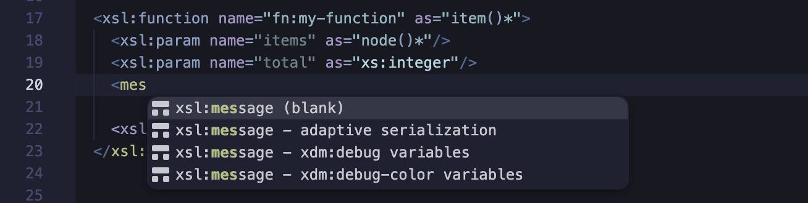
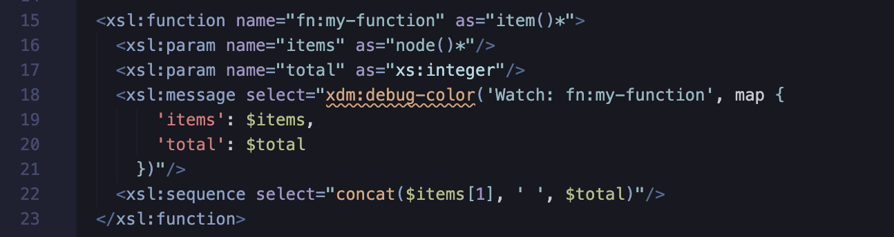
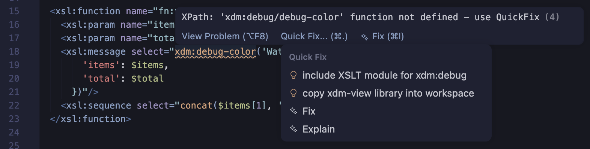
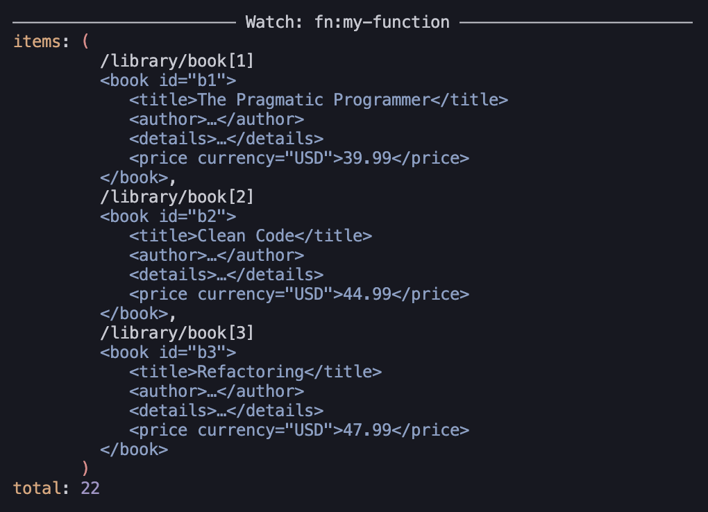

Print Debugging
To set breakpoints and step through a stylesheet, see the Debugger.
While debugging, a logpoint can do much of what an
xsl:message with xdm:debug-color() does, without changing the stylesheet or
including the xdm-view library. Its message can include XPath values, formatted and colored in the same
way, and {$*} writes all the local variables, with a banner. A logpoint has less
flexibility, though:
- Messages are only written while debugging, with SaxonJ - not when the stylesheet runs as a task or with Quick Run, or with SaxonJS or SaxonC.
- There's less control over formatting: the banner always names the template, function or
instruction, there's no
$levelindentation, and{$*}writes every local variable, not a chosen set. - An expression in the message can't contain braces, as in a map constructor.
- Logpoints aren't saved with the code. VS Code keeps them for the workspace, so they can't be committed or shared with the stylesheet.
Adding xsl:message instructions is another way to debug XSLT - one that works with any Saxon processor, including SaxonJS and SaxonC, and shows how values change over a whole run. The output is written to the terminal when the stylesheet runs as a task or with Quick Run, and to the Debug Console when it's debugged, with ANSI colors kept in both. Diagnostics are added using the xdm:debug() function, from the xdm-viewer XSLT library, which renders one or more named in-scope variables to a formatted string for use in an xsl:message.
Diagnosing state of in-scope XSLT variables
There is special provision for conveniently reviewing the state of in-scope XSLT variables. This approach is outlined here.
1. Use Auto-complete for xsl:message
To assist with debugging, the XSLT editor has special auto-completion for the xsl:message instruction. Four completion items are offered when in-scope variables are found - otherwise, only xsl:message (blank):
- xsl:message (blank) - inserts a simple placeholder, for entering your own xsl:message content
- xsl:message - adaptive serialization - serializes the last declared variable using
serialize()with theadaptivemethod - xsl:message - xdm:debug variables - lists all in-scope variables in a single xdm:debug() call
- xsl:message - xdm:debug-color variables - as above, with ANSI-colored output

2. Review Inserted xsl:message
When xsl:message - xdm:debug variables (or xsl:message - xdm:debug-color variables) is selected from the auto-complete list,
an xsl:message snippet is inserted at the cursor with all in-scope variables collected into a single XPath map,
passed as the second argument to xdm:debug(). A title is inserted as the first argument:
Watch: followed by the name of the element that the xsl:message is in - e.g. an xsl:function or
named template - or the mode of an xsl:template. If that element has neither, the title is
Watch Variables.
<xsl:message select="xdm:debug('Watch: my-function', map {
'items': $items,
'total': $total
})"/>

xsl:message inserted with unresolved call to xdm:debug-color()3. Quick Fix: Include the xdm-view Library
As can be seen above, the xdm:debug() function is not initially resolvable - it will be marked
as a 'problem' until its defining library is included. Put the cursor on the problem function and open
Quick Fix with Cmd/Ctrl+. - or choose Quick
Fix... when hovering over it.
Two Quick Fix options are offered:
- include XSLT module for xdm:debug and xdm:trace (the preferred option) - inserts the
xdm namespace declaration (
http://deltaxignia.com/ns/xdm-persistence) and an xsl:include instruction referencing a workspace-local copy of xdm-view.xsl if one is found, otherwise the copy of the xdm-viewer library bundled with this extension. - copy xdm-view library into workspace - copies the bundled xdm-viewer library
(and its xdm-persistence dependency) into an
xslt-resources/xdm-viewfolder in your workspace, then applies the same include as above. Use this if you want the library files available locally, for example to inspect or version them alongside your own stylesheets.

xdm:debug-color()4. Run XSLT and Review State in Terminal
You can now run the XSLT as normal, but you will now see the xsl:message output in the terminal window, with each in-scope variable shown under a title banner. Node values are shown with their location path and a pruned, truncated rendering, keeping the output readable for large trees.

xsl:message output xdm:debug-color().5. Benefits of xdm:debug() over fn:serialize()
We recommend the xdm:debug-color() function as it supplements the built-in serialize function with features that are
especially important when you're interested in several variable values or the values have complex types.
The auto-complete fills in the arguments, so you rarely need to change them. The function signatures are:
xdm:debug($title as xs:string, $labels as map(xs:string, item()*)) as xs:string
xdm:debug($title as xs:string, $labels as map(xs:string, item()*), $level as xs:integer) as xs:string
xdm:debug-color($title as xs:string, $labels as map(xs:string, item()*)) as xs:string
xdm:debug-color($title as xs:string, $labels as map(xs:string, item()*), $level as xs:integer) as xs:string
- The output begins with a title to help locate the xsl:message in the code
- The remaining content is structured in two columns: variable names in the first, values in the second
- Nested maps, arrays and sequences are formatted for readability
- Bracket-pair coloring helps identify the start/end of maps, sequences or arrays
- A set of named variables or parameters can be serialized with a single function
- Lexical XPath locations are shown above each node, and above each XPath 4.0 JNode, e.g.
/lines/*[2]/sku- see JSON and JNodes - Node content is truncated when required to keep message output concise
- Syntax highlighting helps identify types and map keys etc.
- Values are annotated with their type where this is non-obvious
- The optional
$levelargument adds indentation proportional to this value - helpful for recursive calls
Tracing a value within an expression: xdm:trace()
To see a value part-way through an XPath expression, without taking the expression apart, wrap it in
xdm:trace(). Like XPath's built-in trace(), it returns the value unchanged, so
the expression gives the same result, and writes it with xsl:message, after a label. Where
trace()'s output is up to the processor - Saxon writes one line per item, with a map on one
line - xdm:trace() writes the value as xdm:debug() does: formatted over several
lines where it has structure, and in color.
<xsl:variable name="total" select="sum(xdm:trace($order/line ! (@qty * @price), 'line totals'))"/>
<xsl:variable name="customer" select="xdm:trace($customers?($id), 'customer')"/>
line totals: (7.5, 12, 17.5)
customer: {
'name': 'Ada',
'langs': ['xslt', 'xpath']
}
To trace an existing expression, select it and choose Wrap with xdm:trace() (or
Wrap with trace()) from the refactoring code actions, e.g. with
⌘.. The call's label is the expression itself, selected so you can type
another. When you've finished debugging, put the cursor on a call's name - xdm:trace,
trace or fn:trace - and choose Remove xdm:trace() - keep the
expression to leave just the expression traced. It's kept in brackets only where it needs them to
keep its meaning, e.g. (1 + 2) * 2 from xdm:trace(1 + 2, 'x') * 2.
At the start of an XPath expression, auto-completion offers xdm:trace(…, label). It's from
the same xdm-viewer library as xdm:debug(), so it's marked as a problem until the library is
included, with the same Quick Fix. The function signatures are:
xdm:trace($value as item()*) as item()*
xdm:trace($value as item()*, $label as xs:string?) as item()*
xdm:trace($value as item()*, $label as xs:string?, $useColor as xs:boolean) as item()*
- Color is on by default. To turn it off for every call - e.g. when messages are written to a log
file - set the
NO_COLORenvironment variable, to any value. To turn it off for one call, passfalse()as the third argument. - Node values are shown with their location path and a pruned rendering, as with
xdm:debug(). xdm:trace()reads the whole value before returning it, to format it.trace()may instead report the items of a lazily evaluated value one at a time as they're used - so, for example,head(xdm:trace($items))reads all of$items.- In the debugger, the output is written to the Debug Console, in color.